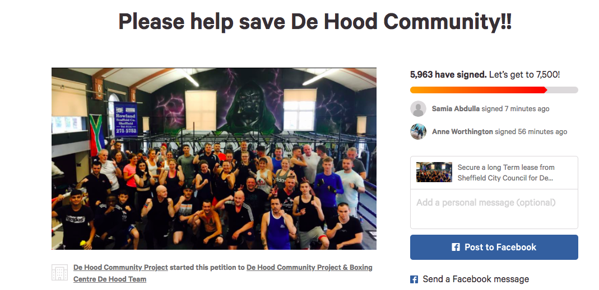
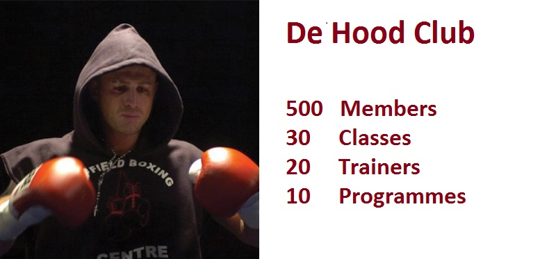
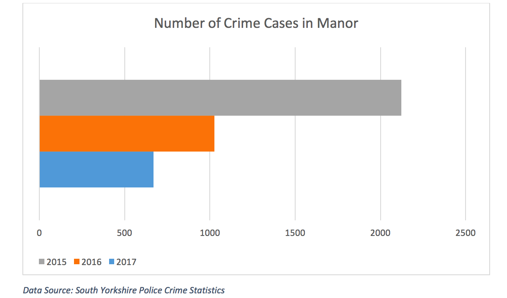

:life-transforming club faces uncertain future
A boxing club that has transformed many people’s life in a troubled area faces an uncertain future in Sheffield.
De Hood, located in Manor Top, is a non-profit fitness centre based on a former school owned by Sheffield City Council. It does not pay any rent because it acts as a caretaker keeping the site in good condition and brings many positive changes to the local area.
This place, though, is in danger now as the council is considering renting the place to Costa coffee and Iceland supermarket who have expressed interests in building outlets on site.
Reagan Denton, founder of De Hood, said: "This was built in The Manor, by The Manor and for The Manor and it has got to stay.
"It saves lives and has transformed the community. Who would kick those kids out of that center?”
De Hood volunteering trainer Pop Haywood echoed, saying: “This place is built on people and it’s wrong to put human interest against profit.”
De Hood has collected more than 5000 signatures on petition to bring this issue to debate on Wednesday’s full council meeting.
Praising the great impact De Hood has had on the local area, Sheffield City Councillor Julie Dore said at the meeting that no firm decision has been made yet, but the business, if secured, may inject 15-million investments to the area and hundreds of job opportunities can be created, adding the council may try to find another appropriate site for the club to carry on its brilliant cause.
De Hood background
De Hood was founded by Reagan Denton, former Yorkshire boxing champion. Spoiled by fame and wealth after winning the championship, Manor boy Reagan led the wrong path and ended up in jail.
Upon his release, the former ex-bad boy knew where his life went off the track and he did not want to see anyone else fall for the same pitfalls as he did.
One day, he saw from his windows that a couple of kids were throwing dog waste at a mum passing by. He ran out and stopped them. Asked why they did this, the kids replied they were bored and had nothing else to do.
It was at that moment that the idea to build a club where kids and adults can pass their time in this area began to form in Reagan’s head. He invited those kids to learn boxing with him.
De Hood began with two kids and a sand bag, and now it has developed into the most popular fitness club in local area.
De Hood achievements
Crime rate in Manor dropped by 50% in 2016 and 37% in 2017 since De hood was founded, according to South Yorkshire Police.
South Yorkshire Fire and Rescue has reported that they have seen a significant decrease of 75% in deliberate fire cases around the boxing gym.
De Hood member stories
What makes De Hood different from other gyms is its people. There are some personal stories about how this home-like place has changed everyone who comes here.
"If it were not for this place, I would probably be dead now."
Leroy Young got addicted to drugs and drinking in 2010 due to work pressure and tough relations with his daughter’s mother. They cost him his job and driving license, and his home was in danger. His families and friends isolated him because he did crazy stuff.
“Nobody wanted to be around me, and even drug dealers didn’t want to sell drugs to me,” according to Leroy.
He went to several rehab centers on and off during the past six years, because he felt normal life is too stressful for him. Serious changes came in 2016 when he was introduced to rehab community in De hood. He came out clean and never looked back.
“I didn’t need drinking to get myself out of stress, because I have De Hood now,” Leroy said.
"It’s a family and I am thankful for this place."
After attempting suicide by walking in front of a train, Kyle Rory suffered a broken spine and was told he would never walk again. He was then invited to De Hood by Reagan after they met accidentally at church. With his persistence, physio training and support from the club, Kyle manage to walk with sticks now. He said he knew he would not be able to do it in other gyms where he would suffer these all by himself.
“De Hood is like a small community and everyone likes each other,” said Kyle.
"De Hood is like a home to me."
Suffering from a leg injury, Mike Carter has put on weight since then and couldn’t walk because of his size. Obesity has dramatically changed his life and mental status. After coming to De Hood, his trainer Pop Haywood customised a training course for him so that he could shed the pounds gradually, even though Mark couldn't move much at all at his original weight. During the past year, Mark has lost 72 kilos. He said that he felt 100% better and would keep going.
Reagan said: “Although this De Hood location has its character and it would be a shame if we have to relocate, one thing is certain. De Hood will only get bigger and bigger, because De Hood is never about place, it is about people.”